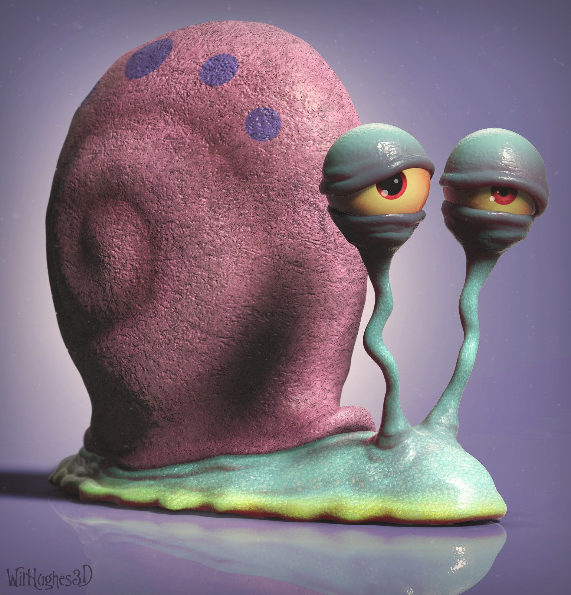
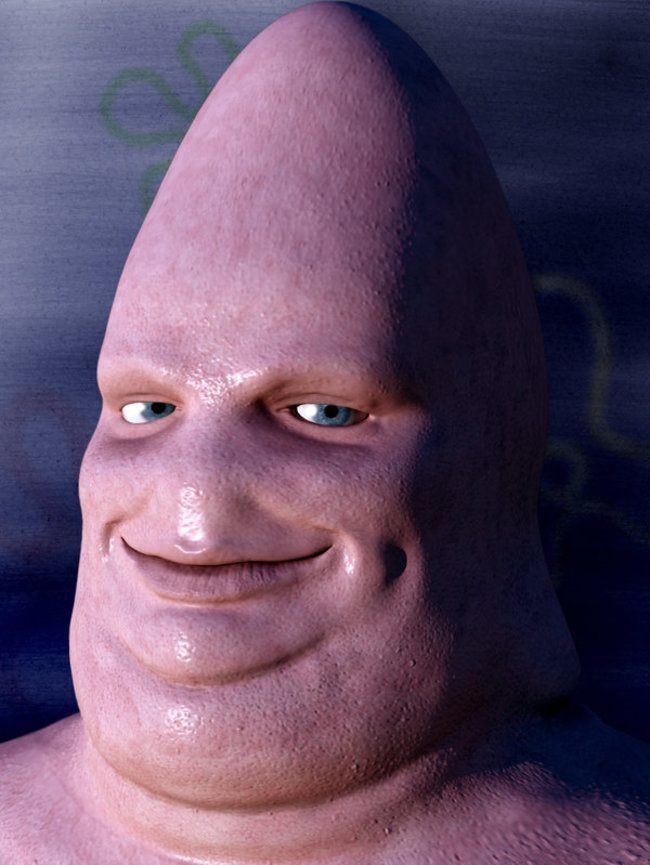
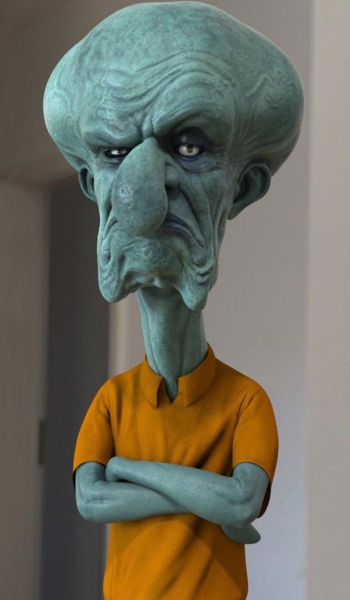
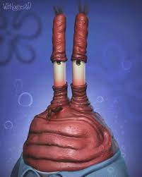
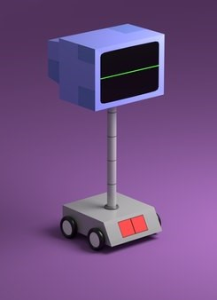
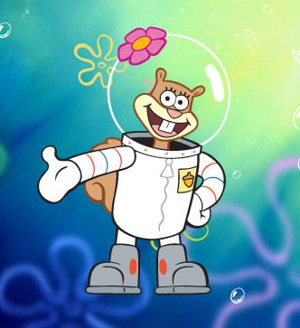
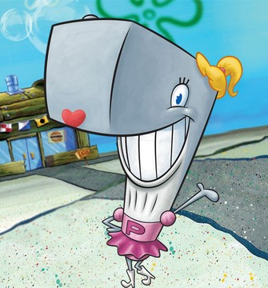
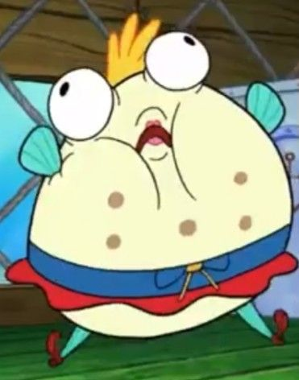

Mario
Ubeira González
Datos generales
Dirección: Paul Tibbitt
Título en V.O: The SpongeBob Movie: Sponge Out of Water
Nacionalidad: USA
Año: 2014
Fecha de estreno: 06-02-2015
Duración: 90 minutos
Género: Animación
Color o en B/N: Color
Guión: Jonathan Aibel, Glenn Berger
Fotografía: Phil Meheux
Música: John Debney.
Descripcion
Bob Esponja y sus amigos: Patricio, Calamardo, Señor Cangrejo, Arenita Y Plankton salen de su confortable Fondo de Bikini para luchar contra el malvado pirata Barba Burguer que ha robado la secreta fórmula de la cangreburger sumiendo a Fondo de Bikini en el más absoluto caos.
Datos sobre el director
Nombre completo: Paul Harrison Tibbitt Fecha de Nacimiento: 13 de mayo de 1968. Nacionalidad: Estadounidense. Formación: Instituto de las Artes de California.
-
Filmografía:
- Loose Tooth (corto de televisión) (1997; animador y escritor)
- Recess (1997; revisión de animación)
- CatDog (1998; actor de voz)
- Herd (corto de televisión) (1999; escritor)
- Bob Esponja (1999-2017, artista de animación y escritor; 1999-2004, productor ejecutivo; 2007-2015, productor de supervisión; 2005-2015, showrunner; 2005-2015, compositor de música adicional).
- Super Santa in South Pole Joe (2002; diseñador de animación).
- What ever happened to Robot Jones? (2002; artista de animación)
- Bob Esponja: La Película (2004; escritor y animador)
- Bob Esponja: Un héroe fuera del agua (2015; director)
Personajes
Bob Esponja
Es el personaje principal de la serie. Es un agradable y optimista esponja de mar que trabaja en el Crustáceo Crujiente, asiste a la escuela náutica, y se junta con su amigo Patrick, o pasa tiempo con Arenita, una ardilla.

Gary
Es la mascota de Bob Esponja. Es un caracol de mar.
Patricio Estrella
Es el mejor amigo de Bob Esponja y al prójimo, que es una estrella de mar. Él es conocido por no hacer nada, y por lo general se mezcla con Bob Esponja sus situaciones.
Calamardo
Es un pulpo gigante de color azul verdoso, amargado y arrogante. Se puede decir que es el antagonista, puesto que busca estar alejado de Bob y Patricio. Bob Esponja y Patricio lo consideran su amigo, aunque él los detesta por su falta de inteligencia.
Don Cangrejo
Es un cangrejo muy avaro y tacaño con el dinero que gana y detesta gastarlo, sin dudarlo, parece una parodia de Scrooge McDuck. Él es el dueño del Crustáceo Crujiente y jefe de Bob Esponja y Calamardo.
Plankton
Fue diseñado como un villano recurrente que ocasionalmente irrumpiría en la rutina para crear algunas situaciones caóticas, pero la popularidad de Plankton le ha asegurado un puesto fijo en el elenco de personajes habituales de la serie. Creó el restaurante de comida rápida Cum Bucket
Karen
Es una supercomputadora y la esposa de Plankton. A menudo expresa emociones humanas (regularmente ironía y sarcasmo) y actúa como un humano. Karen por lo general ayuda a Plankton en sus planes para robar la fórmula de las cangreburguers o causar problemas en general.
Arenita Mejillas
Es una ardilla hembra de Texas. Le gustan los deportes extremos y la ciencia. Ella es uno de los amigos de Bob Esponja.
Perla Cangrejo
O Perlita, es una ballena adolescente. A pesar de ser una ballena, ella es la hija del Don Cangrejo. Perlita es muy emocional y propenso a berrinches.
Sra. Puff
Es la profesora de la Escuela de Botes. Ella es un pez globo que a menudo infla después de estrellarse un barco.

Formulario sobre la película:
Que puntuación le darías a la película?:
Que te ha parecido la animación de la película?:
Que te ha parecido el sonido de la película?:
Escoge tus personajes favoritos:
Escribe tu opinión sobre la película: